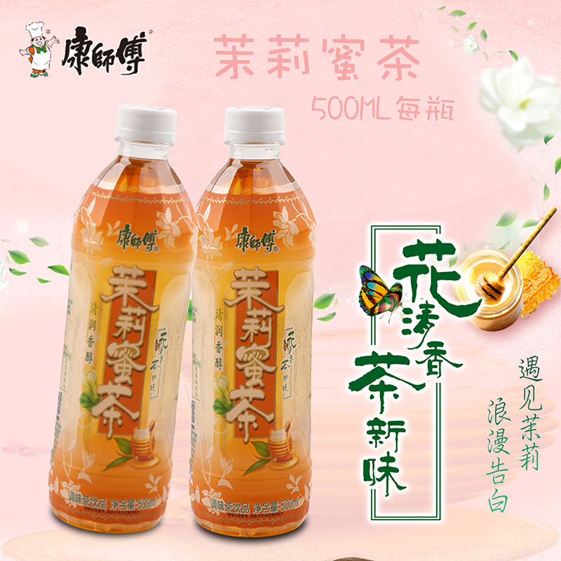
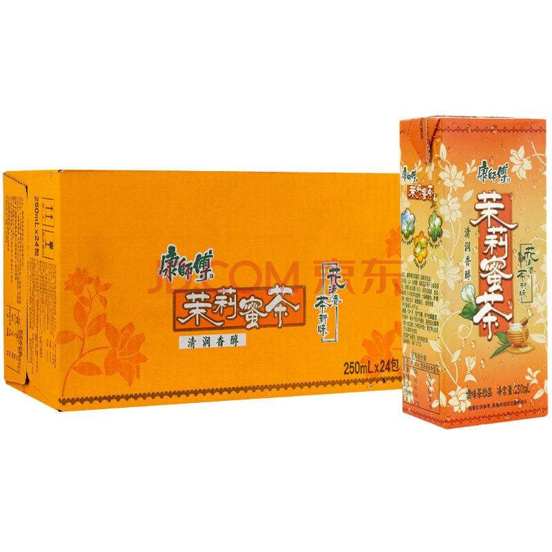
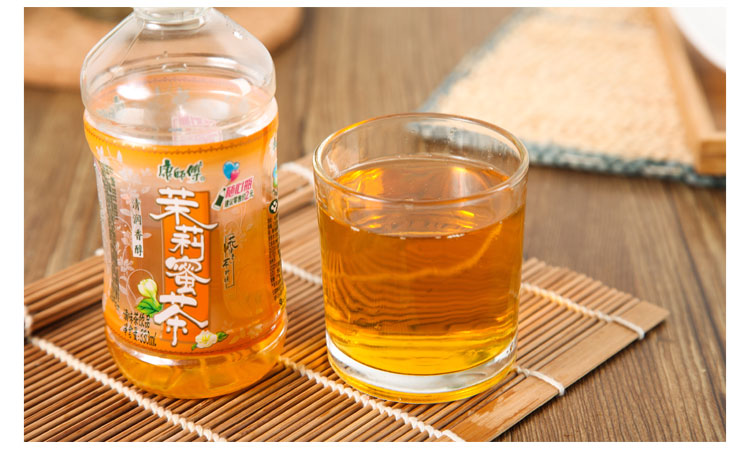

|  | 茉莉蜜茶是一种结合了茉莉花茶和蜂蜜的饮品，其特点是清香茉莉与蜂蜜的完美融合，口感清润香醇。茉莉蜜茶的配料包括水、白砂糖、茉莉花茶茶叶（绿茶茶坯）、蜂蜜、绿茶浓缩液。每100ml的能量含量为126KJ，不含蛋白质和脂肪，因此热量较低。 茉莉蜜茶不仅口感独特，还具有多种健康益处。其香气可以安定情绪、除口臭、调节内分泌、润泽肤色，并对月经失调有一定的疗。此外，茉莉蜜茶的包装设计简约时尚，有500毫升和1升两种规格可选，性价比高，适合解渴消暑或作为健康美味的茶饮选。 茉莉蜜茶的市场定位是面向追求健康和美味饮品的消费者。其价格亲民，采用优质原料如双瓣茉莉花和一级品龙眼蜜，确保了产品的口感和品。茉莉蜜茶不仅适合在炎炎夏日饮用，还能在寒冷冬天提供温暖，是理想的饮品选择 |
|  |  |